Redes Neuronales y Algoritmos Bioinspirados · Universidad Nacional de Colombia, sede Medellín · 2026-02
Enlaces: Repositorio · Aplicación web · Video promocional
Antes de prestarle dinero a alguien, un banco se hace dos preguntas: ¿qué tan probable es que no me pague? y, si no me paga, ¿cuánto voy a perder? La primera es la probabilidad de incumplimiento (PD) y es un problema de clasificación binaria. La segunda es la pérdida dado incumplimiento (LGD) y es un problema de regresión. Multiplicadas por la exposición (EAD) dan la pérdida esperada de cada crédito.
En este trabajo respondemos las dos preguntas con perceptrones multicapa y los comparamos de forma justa contra modelos sencillos: una regresión logística para la PD y una regresión lineal para la LGD. Además convertimos el modelo de PD en una scorecard y en una aplicación web donde cualquier persona puede ver cómo la vería un banco.
En resumen, lo que encontramos:
Usamos el conjunto Credit Risk Analysis de Kaggle (Ranadeep,
s. f.), con créditos de consumo de Lending Club, una plataforma
estadounidense de préstamos entre personas. El archivo
loan.csv tiene 887 379 registros y 74
variables, con créditos originados entre junio de 2007
y diciembre de 2015. Lo descargamos el 26 de octubre de
2026. El significado de cada variable lo tomamos del
diccionario incluido en el conjunto
(LCDataDictionary.xlsx), no de lo que nos dijera una IA; la
lista completa está en docs/02_variables.md.
La variable objetivo malo se construyó a partir de
loan_status con la codificación del enunciado (Tabla 1).
Los créditos sin desenlace conocido se excluyen.
Tabla 1. Codificación de loan_status y
número de créditos en el archivo original.
| Categoría | Créditos | malo |
|---|---|---|
| Fully Paid | 207 723 | 0 |
| Does not meet the credit policy. Status:Fully Paid | 1 988 | 0 |
| Charged Off | 45 248 | 1 |
| Late (31-120 days) | 11 591 | 1 |
| Default | 1 219 | 1 |
| Does not meet the credit policy. Status:Charged Off | 761 | 1 |
| Current | 601 779 | excluido |
| Issued | 8 460 | excluido |
| In Grace Period | 6 253 | excluido |
| Late (16-30 days) | 2 357 | excluido |
Fuente: elaboración propia con datos de Lending Club (Kaggle).
Quedan 268 530 créditos con desenlace: 58 819 malos (21,9 %) y 209 711 buenos. De las 74 variables usamos 31 como entradas (21 numéricas, contando la antigüedad de la historia crediticia que calculamos, y 10 categóricas) y guardamos aparte 13 variables posteriores al desembolso, que solo sirven para construir la LGD.
El modelo lo usa el analista de crédito, o el sistema automático de aprobación, de una entidad que presta a personas naturales. Lo usa para decidir si aprueba una solicitud de crédito de consumo y estimar cuánto podría perder. Lo usa el día de la solicitud, antes de desembolsar el dinero.
Esa última frase define todo lo demás: solo podemos usar lo que se sabe ese día. Eso incluye lo que declara la persona (ingreso, antigüedad laboral, vivienda, propósito, monto), su historia en el buró (deudas, cuentas, consultas, moras pasadas) y las condiciones que ofrece el banco (plazo, tasa, grado). Todo lo que pasa después de prestar (pagos, saldo pendiente, recuperaciones, fecha del último pago) queda por fuera de las entradas, porque usarlo sería fuga de información: el modelo se vería muy bueno en las pruebas y no serviría en la vida real.
Una aclaración importante: la tasa de interés y el grado sí se conocen el día de la solicitud, pero los asigna Lending Club con su propio modelo de riesgo. Los dejamos porque el caso de uso los permite, pero hay que tener en cuenta que en buena parte resumen la evaluación que ya hizo Lending Club.
Antes de modelar planteamos 12 hipótesis sobre qué hace más riesgosa a una persona y miramos la tasa de malos según cada variable por separado (Figuras 1 a 3).
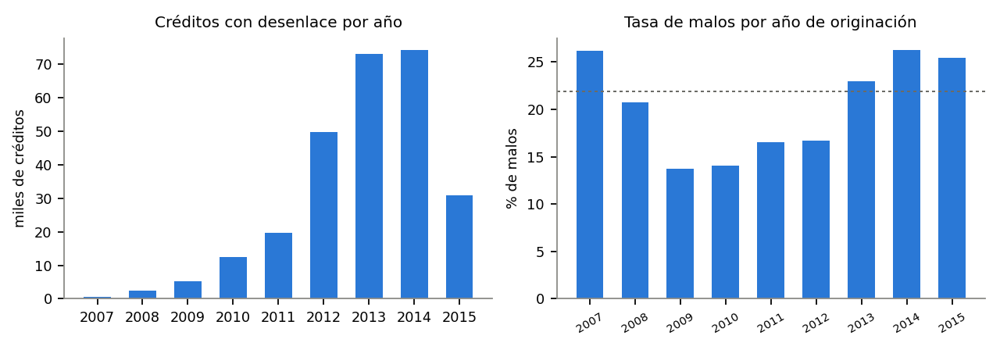
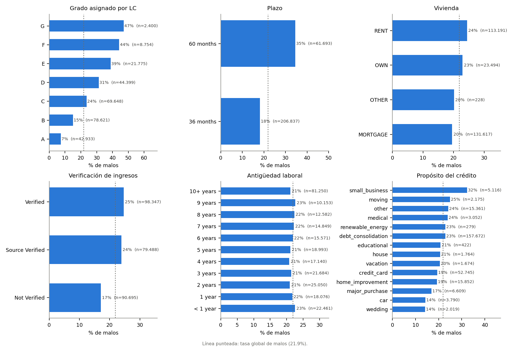
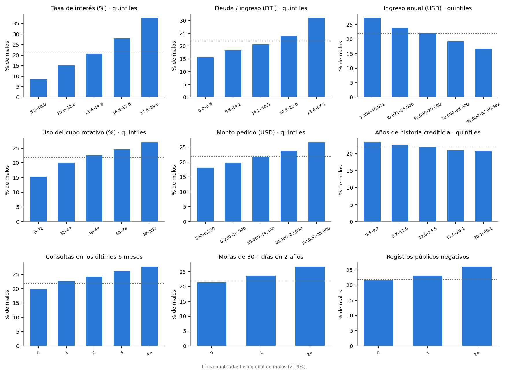
Tres cosas nos llamaron la atención:
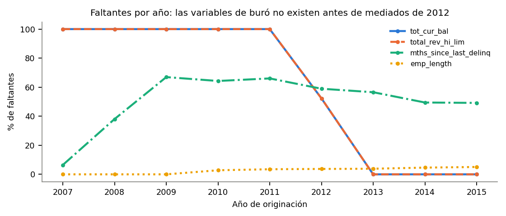
Las hipótesis y su evidencia descriptiva están en la Tabla 7 (sección 7.4), junto con lo que dijo el modelo al final.
Todas las particiones son temporales, por fecha de originación (Tabla 2): el banco entrena con créditos del pasado y usa el modelo con solicitudes futuras, y una partición aleatoria mezclaría meses y daría una evaluación más optimista. La validación se usa para elegir hiperparámetros y la prueba se mira una sola vez, al final.
Tabla 2. Particiones de cada tarea.
| Tarea | Conjunto | Créditos originados | n | Tasa de malos / LGD media |
|---|---|---|---|---|
| PD | Entrenamiento | sep-2012 a jun-2014 | 135 329 | 22,5 % |
| PD | Validación | jul-2014 a dic-2014 | 34 988 | 27,1 % |
| PD | Prueba | ene-2015 a dic-2015 | 30 835 | 25,5 % |
| LGD | Entrenamiento | sep-2012 a jun-2013 | 7 698 | 0,903 |
| LGD | Validación | jul-2013 a dic-2013 | 4 781 | 0,901 |
| LGD | Prueba | ene-2014 a dic-2014 | 3 774 | 0,910 |
Fuente: elaboración propia con datos de Lending Club (Kaggle).
En la PD, validación y prueba tienen más malos que el entrenamiento por el sesgo de selección de la sección 4. Esto afecta la calibración y lo comentamos en los resultados.
Es el mismo para todos los modelos de una tarea y se ajusta
solo con el entrenamiento
(src/comun.py):
mths_since_last_delinq,
mths_since_last_record y
mths_since_last_major_derog se agrega un indicador
nunca_… igual a 1 si el valor falta. El 55 % de faltantes
de mths_since_last_delinq no parece un dato perdido sino
una persona que nunca ha estado en mora, así que imputar con la mediana
sin el indicador borraría esa información.application_type (solo 3 créditos conjuntos
con desenlace) y sub_grade (repite lo que dicen
grade e int_rate).Quedan 29 variables originales, que se convierten en 106 entradas en la PD y 85 en la LGD.
Para cada familia de modelos reportamos cuántas configuraciones se
entrenaron, el tiempo de cómputo total y el número de parámetros. La
configuración final de cada red se entrena con 30 semillas y reportamos
media, desviación estándar, mejor y peor valor. Todas las semillas están
fijas en los archivos de config/.
Una neurona recibe un vector \(\mathbf x\), calcula una combinación lineal y le aplica una función de activación \(g\):
\[a = g(\mathbf w^\top \mathbf x + b).\]
Un perceptrón multicapa (MLP) apila \(L\) capas de neuronas. Con \(\mathbf h^{(0)} = \mathbf x\),
\[\mathbf h^{(l)} = g\left(W^{(l)}\mathbf h^{(l-1)} + \mathbf b^{(l)}\right), \qquad l = 1, \dots, L,\]
y la salida es una sola neurona: \(z = \mathbf w^{(L+1)\top}\mathbf h^{(L)} + b^{(L+1)}\) y \(\hat\mu = \sigma(z) = 1/(1+e^{-z})\). En las dos tareas usamos la sigmoide en la salida, porque tanto la PD como la LGD están entre 0 y 1. Si se quitan las capas ocultas queda \(\hat\mu = \sigma(\mathbf w^\top\mathbf x + b)\), que es la regresión logística: la red es una logística que construye sus propias variables \(\mathbf h^{(L)}\).
Las activaciones ocultas que probamos están en la Tabla 3. Sin una activación no lineal, la red completa sería una función lineal y no ganaría nada frente a la logística.
Tabla 3. Funciones de activación utilizadas.
| Activación | \(g(u)\) | \(g'(u)\) |
|---|---|---|
| ReLU | \(\max(0, u)\) | \(1\) si \(u > 0\); \(0\) si no |
| Leaky ReLU | \(\max(0{,}01u,\ u)\) | \(1\) si \(u > 0\); \(0{,}01\) si no |
| tanh | \(\tanh(u)\) | \(1 - \tanh^2(u)\) |
| sigmoide (salida) | \(\sigma(u) = 1/(1+e^{-u})\) | \(\sigma(u)(1-\sigma(u))\) |
Fuente: elaboración propia.
PD: entropía cruzada binaria. Suponemos \(y_i \mid \mathbf x_i \sim \text{Bernoulli}(\hat\mu_i)\). La verosimilitud de la muestra es \(\mathcal L(\theta) = \prod_i \hat\mu_i^{\,y_i}(1-\hat\mu_i)^{1-y_i}\), y maximizarla equivale a minimizar menos el logaritmo promedio:
\[J(\theta) = -\frac1n\sum_{i=1}^n\Big[y_i\ln\hat\mu_i + (1-y_i)\ln(1-\hat\mu_i)\Big].\]
Con salida sigmoide, \(\partial J_i/\partial z_i = \hat\mu_i - y_i\).
LGD: cuasi-verosimilitud de Bernoulli. La LGD es una proporción en \([0,1]\) con 31,5 % de valores exactamente iguales a 1. Papke y Wooldridge (1996) proponen usar la misma expresión de \(J(\theta)\) aunque \(y_i\) no sea 0 o 1. Funciona porque
\[\frac{\partial \ell_i}{\partial\hat\mu_i} = \frac{y_i - \hat\mu_i}{\hat\mu_i(1-\hat\mu_i)},\]
cuyo valor esperado dado \(\mathbf x\) es cero exactamente cuando \(\hat\mu = E[y\mid\mathbf x]\): el estimador apunta a la media condicional de la LGD, que es lo que necesita la pérdida esperada, sin suponer una distribución para \(y\).
La alternativa, error cuadrático (MSE). Sale de suponer \(y_i \sim \mathcal N(\mu_i, \sigma^2)\):
\[-\ln\mathcal L = \frac n2\ln(2\pi\sigma^2) + \frac{1}{2\sigma^2}\sum_{i=1}^n (y_i-\mu_i)^2,\]
y minimizar en \(\mu\) es minimizar
\(\sum_i(y_i-\mu_i)^2\). También estima
la media condicional, pero la normal supone simetría y valores en todos
los reales. Además, con salida sigmoide su gradiente se multiplica por
\(\sigma'(z)\), que es casi cero
cuando la predicción está cerca de 1, justo donde está la LGD. La
regresión beta (Ferrari y Cribari-Neto, 2004) tampoco sirve, porque la
densidad beta no está definida en \(y =
1\). El MSE queda disponible como opción
(--set red.perdida=mse).
Con \(\mathbf u^{(l)} = W^{(l)}\mathbf h^{(l-1)} + \mathbf b^{(l)}\) y \(\boldsymbol\delta^{(l)} = \partial J/\partial\mathbf u^{(l)}\), la regla de la cadena da (Rumelhart et al., 1986):
\[\delta^{(L+1)} = \hat\mu - y, \qquad \boldsymbol\delta^{(l)} = \left(W^{(l+1)\top}\boldsymbol\delta^{(l+1)}\right)\odot g'\left(\mathbf u^{(l)}\right),\]
\[\frac{\partial J}{\partial W^{(l)}} = \boldsymbol\delta^{(l)}\,\mathbf h^{(l-1)\top}, \qquad \frac{\partial J}{\partial\mathbf b^{(l)}} = \boldsymbol\delta^{(l)}.\]
El error se calcula en la salida y se devuelve capa por capa, multiplicando por los pesos y por la derivada de la activación. En el código, PyTorch calcula esto automáticamente.
Con mini-lotes y gradiente \(\mathbf g_t = \nabla_\theta J_B(\theta_t)\):
SGD con momento (\(\mu = 0{,}9\)): \(\mathbf v_t = \mu\mathbf v_{t-1} + \mathbf g_t\) y \(\theta_{t+1} = \theta_t - \eta\,\mathbf v_t\).
Adam (Kingma y Ba, 2015):
\[\mathbf m_t = \beta_1\mathbf m_{t-1} + (1-\beta_1)\mathbf g_t, \qquad \mathbf v_t = \beta_2\mathbf v_{t-1} + (1-\beta_2)\mathbf g_t^2,\]
\[\hat{\mathbf m}_t = \frac{\mathbf m_t}{1-\beta_1^t}, \quad \hat{\mathbf v}_t = \frac{\mathbf v_t}{1-\beta_2^t}, \qquad \theta_{t+1} = \theta_t - \eta\,\frac{\hat{\mathbf m}_t}{\sqrt{\hat{\mathbf v}_t}+\epsilon},\]
con \(\beta_1 = 0{,}9\), \(\beta_2 = 0{,}999\) y \(\epsilon = 10^{-8}\).
weight_decay):
se minimiza \(J(\theta) +
\frac\lambda2\|\theta\|^2\), lo que suma \(\lambda\theta\) al gradiente y empuja los
pesos hacia cero. En la logística el mismo papel lo cumple \(C = 1/\lambda\), y en la regresión lineal
(Ridge) el parámetro \(\alpha\).PD (discriminación y calibración):
LGD:
El puntaje es una función lineal del logaritmo de las odds de ser bueno (Siddiqi, 2006):
\[\text{Puntaje} = \text{Offset} + \text{Factor}\cdot\ln\frac{1-p}{p}.\]
Exigimos dos condiciones: que con odds de referencia \(o_0\) el puntaje sea \(B\), y que cada \(PDO\) puntos las odds se dupliquen:
\[B = \text{Offset} + \text{Factor}\ln o_0, \qquad B + PDO = \text{Offset} + \text{Factor}\ln(2o_0).\]
Restando, \(PDO = \text{Factor}\ln 2\), así que
\[\text{Factor} = \frac{PDO}{\ln 2}, \qquad \text{Offset} = B - \text{Factor}\ln o_0.\]
Usamos \(B = 600\), \(o_0 = 20\) (20 buenos por cada malo, una PD
de 4,8 %) y \(PDO = 20\). Todo se
cambia desde config/pd.yaml o la línea de comandos
(--set scorecard.pdo=40).
Puntos por variable en la logística. Como \(\ln\frac{1-p}{p} = -(\beta_0 + \sum_j\beta_jx_j)\),
\[\text{Puntaje} = \underbrace{\text{Offset} - \text{Factor}\,\beta_0}_{\text{puntos base} = 550{,}2} + \sum_j\left(-\text{Factor}\,\beta_jx_j\right).\]
Puntos por variable en la red: gradientes integrados. En la red el logit no es una suma, así que usamos gradientes integrados (Sundararajan et al., 2017) con referencia en el cliente típico \(\mathbf x^0\) (medianas y modas del entrenamiento):
\[\text{IG}_j(\mathbf x) = (x_j - x_j^0)\int_0^1\frac{\partial z\left(\mathbf x^0 + \alpha(\mathbf x - \mathbf x^0)\right)}{\partial x_j}\,d\alpha.\]
La integral se aproxima con 64 puntos. Por la propiedad de completitud, \(\sum_j\text{IG}_j(\mathbf x) = z(\mathbf x) - z(\mathbf x^0)\), de modo que
\[\text{Puntaje}(\mathbf x) = \text{Puntaje}(\mathbf x^0) + \sum_j\left(-\text{Factor}\cdot\text{IG}_j(\mathbf x)\right).\]
Si el modelo fuera la logística, \(\text{IG}_j = \beta_j(x_j - x_j^0)\) y se recuperan sus puntos. Las columnas one-hot de una misma variable se suman. En 4 000 créditos de prueba el error de completitud fue como máximo 0,016 en el logit, menos de medio punto del puntaje.
Ajustamos una regresión logística con penalización \(L_2\) y probamos \(C\in\{0{,}001;\ 0{,}01;\ 0{,}1;\ 1;\ 10\}\), eligiendo por AUC en validación. Las cinco dan prácticamente lo mismo (AUC de validación entre 0,7186 y 0,7189) y quedó \(C = 0{,}01\): 107 parámetros, 5 configuraciones y unos 9 s en total. La Figura 5 muestra su calibración y la distribución de su puntaje. En validación el modelo predice en promedio 23,7 % y se observa 27,1 %: se queda corto por el cambio en la proporción de malos entre periodos.
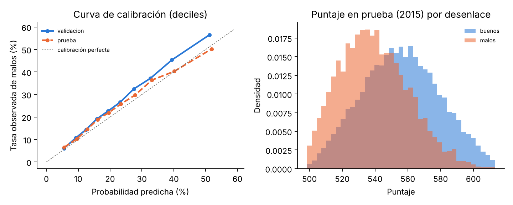
Las variables con mayor rango de puntos en la scorecard logística son
el ingreso anual, la tasa de interés, el monto, el número de cuentas
abiertas y el DTI
(reports/tablas/scorecard_logistica_puntos.csv).
Usamos búsqueda aleatoria de 30 configuraciones (Tabla 4). Bergstra y Bengio (2012) muestran que, con el mismo presupuesto, la búsqueda aleatoria explora mejor que una grilla cuando solo unos pocos hiperparámetros importan de verdad, porque no gasta intentos repitiendo los mismos valores de los que no importan. Cada configuración se entrena hasta 60 épocas con parada temprana y se elige la de mayor AUC en validación.
Tabla 4. Espacio de búsqueda de las redes (entre paréntesis, lo que cambia en la LGD).
| Hiperparámetro | Valores |
|---|---|
| Capas ocultas | 1, 2 o 3; cada capa con la mitad de neuronas que la anterior |
| Neuronas en la primera capa | 32, 64, 128, 256 (y 16 en la LGD) |
| Activación | ReLU, Leaky ReLU, tanh |
| Dropout | 0; 0,1; 0,2; 0,3; 0,5 |
| \(L_2\) | log-uniforme entre \(10^{-6}\) y \(10^{-2}\) |
| Optimizador y tasa | Adam (\(10^{-4}\) a \(3\cdot10^{-3}\)) o SGD con momento (\(10^{-3}\) a \(5\cdot10^{-2}\)), log-uniforme |
| Tamaño de lote | 512, 1024, 2048 (128, 256, 512) |
| Épocas máximas / paciencia | 60 / 6 (200 / 15) |
Fuente: elaboración propia (config/pd_red.yaml y
config/lgd.yaml).
La Figura 6 muestra el resultado: 29 de las 30 configuraciones quedan entre 0,716 y 0,726 de AUC sin importar si tienen 3 mil o 68 mil parámetros, y Adam queda en general por encima de SGD. Una configuración con SGD, tasa baja, dropout 0,5 y lotes de 2048 casi no aprendió (AUC 0,546). La elegida tiene 3 capas de 256, 128 y 64 neuronas, ReLU, dropout 0,3, \(L_2 = 4{,}1\cdot10^{-5}\), Adam con tasa \(1{,}35\cdot10^{-3}\) y lotes de 1024: 68 609 parámetros.
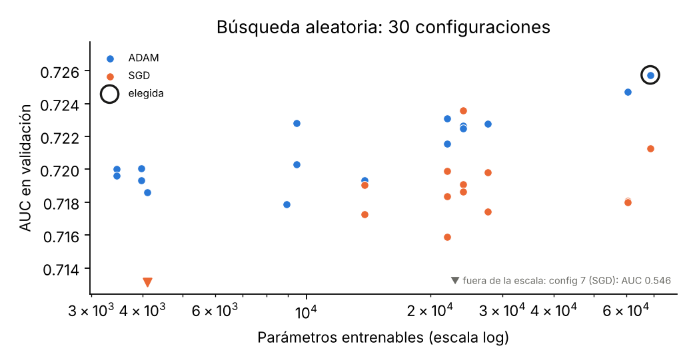
Tabla 5. Métricas de la PD. La logística es determinística y tiene un solo valor.
| Conjunto | Métrica | Logística | Red: media ± desv. | Red: mejor | Red: peor |
|---|---|---|---|---|---|
| Validación | AUC | 0,7189 | 0,7242 ± 0,0010 | 0,7266 | 0,7228 |
| Validación | Gini | 0,4377 | 0,4484 ± 0,0020 | 0,4531 | 0,4455 |
| Validación | KS | 0,3223 | 0,3316 ± 0,0025 | 0,3364 | 0,3263 |
| Validación | Brier | 0,1757 | 0,1738 ± 0,0002 | 0,1733 | 0,1743 |
| Prueba | AUC | 0,6999 | 0,7068 ± 0,0016 | 0,7099 | 0,7038 |
| Prueba | Gini | 0,3997 | 0,4137 ± 0,0033 | 0,4197 | 0,4076 |
| Prueba | KS | 0,2929 | 0,3037 ± 0,0029 | 0,3095 | 0,2978 |
| Prueba | Brier | 0,1724 | 0,1713 ± 0,0005 | 0,1704 | 0,1727 |
Fuente: elaboración propia con datos de Lending Club (Kaggle). En el Brier, “mejor” es el más bajo.
Tabla 6. Costo de cada familia de modelos en la PD.
| Modelo | Parámetros entrenables | Configuraciones | Tiempo total |
|---|---|---|---|
| Regresión logística | 107 | 5 | 9 s |
| Red neuronal | 68 609 | 30 de búsqueda + 30 semillas | 1 206 s |
Fuente: elaboración propia. Tiempos en un portátil de 2 núcleos.
Como se ve en la Tabla 5, la red gana en promedio 0,7 puntos de AUC en prueba y las 30 semillas le ganan a la logística (la peor da 0,7038 frente a 0,6999). La desviación entre semillas (0,0016) es menor que la diferencia. Pero la ganancia es pequeña frente al costo de la Tabla 6. En la Figura 7 las dos curvas de calibración quedan cerca de la diagonal en 2015: la red predice en promedio 25,9 % y se observa 25,5 %. La curva de aprendizaje muestra la parada temprana: la pérdida de entrenamiento sigue bajando mientras la de validación ya no mejora. El modelo guardado para la aplicación es la semilla con mejor AUC en validación; su AUC es 0,726 en entrenamiento y 0,727 en validación, así que no hay sobreajuste fuerte.
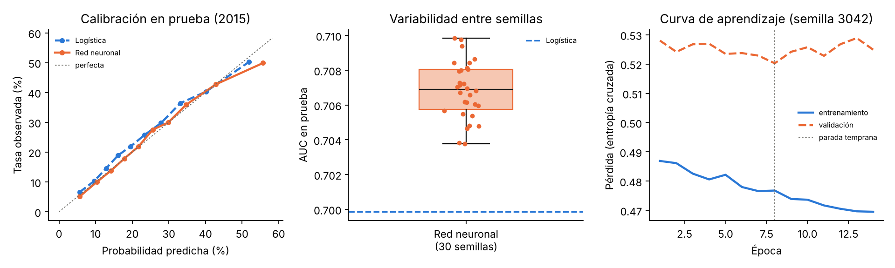
Usamos dos métodos de interpretabilidad que se complementan:
En la Figura 8, las dos variables más importantes en ambos modelos son el ingreso anual y la tasa de interés, seguidas del DTI, el número total de cuentas, el uso del cupo rotativo y el monto. El grado aporta poco cuando ya está la tasa de interés, porque dicen casi lo mismo.
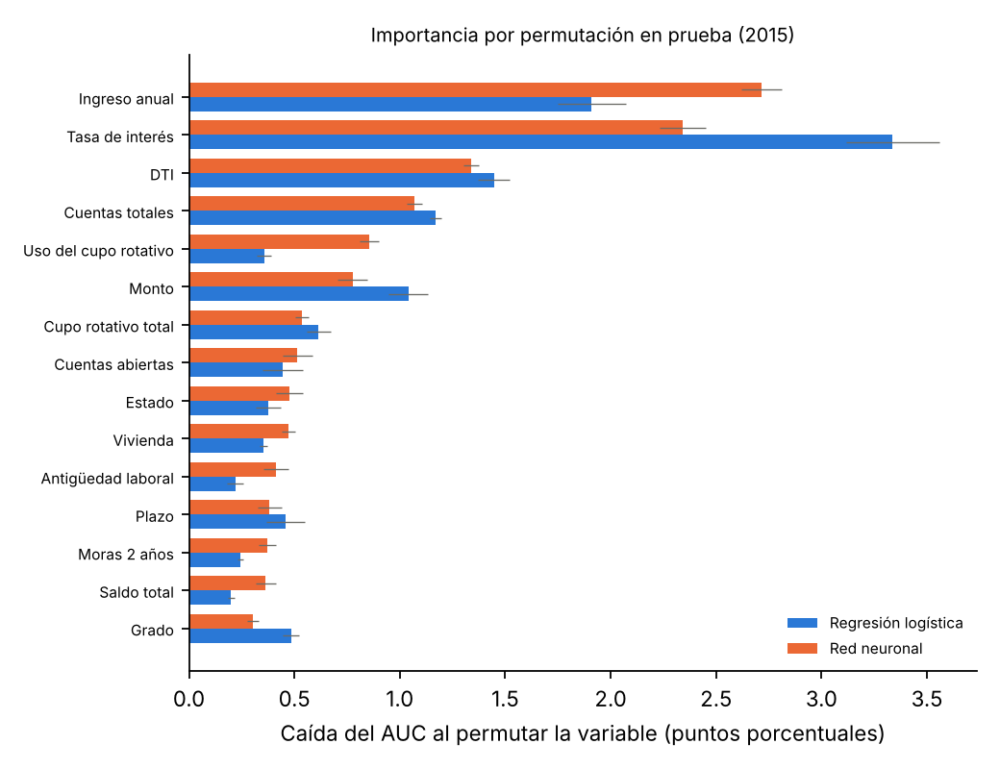
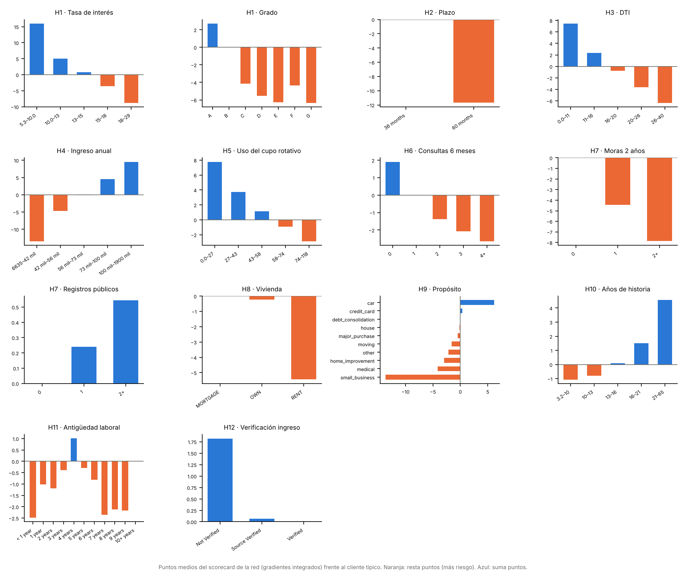
Tabla 7. Hipótesis: lo que mostró el descriptivo (cada variable sola) y lo que hace la red con todas las variables (Figura 9).
| # | Hipótesis | Descriptivo | Red neuronal | Conclusión |
|---|---|---|---|---|
| H1 | Peor grado y mayor tasa de interés, más riesgo | Grado A: 7 %; G: 47 % | Tasa: de +16 a −9 puntos; segunda más importante | Se confirma |
| H2 | 60 meses es más riesgoso que 36 | 35 % frente a 18 % | 60 meses resta 12 puntos | Se confirma |
| H3 | Más DTI, más riesgo | 16 % → 31 % | De +7 a −6 puntos | Se confirma |
| H4 | Menos ingreso, más riesgo | 27 % → 17 % | De −13 a +10 puntos; la más importante | Se confirma |
| H5 | Más uso del cupo, más riesgo | 15 % → 27 % | De +8 a −3 puntos | Se confirma |
| H6 | Más consultas recientes, más riesgo | 20 % → 28 % | De +2 a −3 puntos | Se confirma, débil |
| H7 | Moras y registros públicos, más riesgo | Débil | Moras: −4 y −8 puntos; registros: casi 0 | Solo para moras |
| H8 | Arriendo más riesgoso que hipoteca | 24 % frente a 20 % | Arriendo resta 5 puntos | Se confirma |
| H9 | Negocio propio es el propósito más riesgoso | 32 %, el más alto | Resta 14 puntos, el que más | Se confirma |
| H10 | Más historia crediticia, menos riesgo | Muy débil | De −1 a +5 puntos | Se confirma, débil |
| H11 | Más antigüedad laboral, menos riesgo | Plano | Sin patrón | No se confirma |
| H12 | Ingreso verificado, menos riesgo | Al revés: 25 % frente a 17 % | No verificado suma 2 puntos; importancia ≈ 0 | Se rechaza |
Fuente: elaboración propia con datos de Lending Club (Kaggle).
Dos casos para discutir. En H12, sin las demás
variables “verificado” parecía más riesgoso; con ellas el efecto casi
desaparece. Eso apoya la idea de que Lending Club verifica sobre todo a
quienes ya eran más riesgosos por otras razones, aunque no encontramos
una fuente que lo confirme. En H7, la regresión
logística le daba un poco más puntaje a quien tuvo una mora
reciente, lo que no tiene sentido de negocio; la red sí la castiga. Los
registros públicos, que solos se asociaban con más riesgo, dentro del
modelo ya no restan, posiblemente porque esa información ya está en
mths_since_last_record.
Para cada crédito castigado definimos
\[\text{EAD}_{obs} = \texttt{funded\_amnt} - \texttt{total\_rec\_prncp}, \qquad \text{LGD} = 1 - \frac{\texttt{recoveries} - \texttt{collection\_recovery\_fee}}{\text{EAD}_{obs}},\]
recortada a \([0, 1]\). Según el
diccionario, funded_amnt es “the total amount committed to
that loan at that point in time” (lo que realmente se prestó, que puede
ser menos de lo pedido); total_rec_prncp es “principal
received to date” (el capital que alcanzó a pagar);
recoveries es “post charge off gross recovery” y
collection_recovery_fee es “post charge off collection fee”
(lo que costó cobrar, que no le queda al prestamista). Así, el
denominador es el capital expuesto al momento del castigo y el numerador
es lo recuperado neto.
Decisiones y por qué:
Default y Late (31-120 days) cuentan como
malos en la PD, pero todavía no tienen recuperaciones, porque estas
empiezan después del castigo.Quedan 16 253 créditos, con LGD media 0,904 y mediana 0,880. El 31,5 % tiene LGD = 1 (no se recuperó nada) y la mayoría del resto está entre 0,85 y 0,90 (Figura 10, derecha).
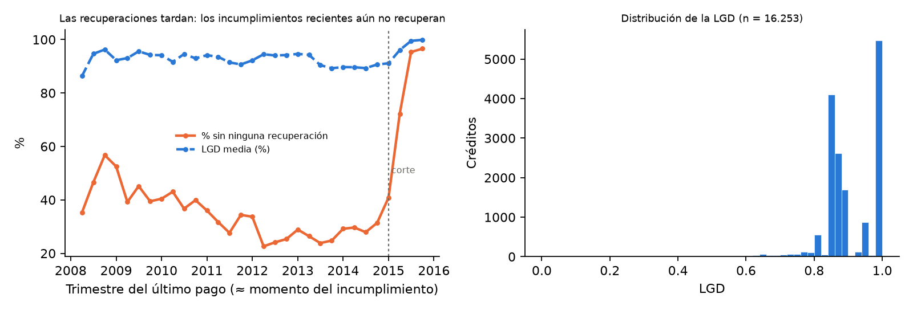
Limitaciones. La LGD no cuenta los intereses
cobrados antes del incumplimiento (total_rec_int), no
descuenta el valor del dinero en el tiempo porque no tenemos la fecha de
cada recuperación, y las recuperaciones de finales de 2014 tuvieron solo
un año para completarse. Además, 38 créditos recuperaron más que la EAD
(LGD negativa) y se recortaron a 0.
Las entradas son las mismas variables de solicitud que la PD, porque el caso de uso es el mismo, con el mismo preprocesamiento ajustado sobre el entrenamiento de la LGD. El modelo de referencia es una regresión lineal con penalización (Ridge), con \(\alpha\in\{0{,}01;\ 0{,}1;\ 1;\ 10;\ 100;\ 1000\}\) elegido por RMSE en validación (\(\alpha = 100\)) y predicciones recortadas a \([0,1]\). La red usa salida sigmoide y entropía cruzada (sección 6.2) con la búsqueda de la Tabla 4, elegida por RMSE en validación: 2 capas de 256 y 128 neuronas, ReLU, dropout 0,1 y Adam, con 55 041 parámetros. Como referencia trivial agregamos predecir siempre la LGD media del entrenamiento.
Tabla 8. Métricas de la LGD.
| Conjunto | Métrica | Media de entrenamiento | Regresión lineal | Red: media ± desv. | Red: mejor | Red: peor |
|---|---|---|---|---|---|---|
| Validación | MAE | 0,0703 | 0,0669 | 0,0661 ± 0,0004 | 0,0653 | 0,0667 |
| Validación | RMSE | 0,0916 | 0,0900 | 0,0899 ± 0,0001 | 0,0897 | 0,0901 |
| Validación | \(R^2\) | −0,000 | 0,033 | 0,036 ± 0,002 | 0,039 | 0,032 |
| Prueba | MAE | 0,0674 | 0,0655 | 0,0654 ± 0,0002 | 0,0651 | 0,0657 |
| Prueba | RMSE | 0,0905 | 0,0898 | 0,0903 ± 0,0001 | 0,0901 | 0,0907 |
| Prueba | \(R^2\) | −0,007 | 0,009 | −0,002 ± 0,003 | 0,003 | −0,011 |
| Prueba | \(W_1\) | 0,0672 | 0,0557 | 0,0542 ± 0,0005 | 0,0532 | 0,0552 |
Fuente: elaboración propia con datos de Lending Club (Kaggle).
Tabla 9. Distribución observada y predicha de la LGD en prueba.
| p5 | p25 | p50 | p75 | p95 | Media | Desv. | |
|---|---|---|---|---|---|---|---|
| Observada | 0,802 | 0,859 | 0,883 | 1,000 | 1,000 | 0,910 | 0,090 |
| Regresión lineal | 0,879 | 0,896 | 0,906 | 0,917 | 0,931 | 0,906 | 0,016 |
| Red neuronal | 0,871 | 0,892 | 0,905 | 0,916 | 0,931 | 0,903 | 0,018 |
Fuente: elaboración propia con datos de Lending Club (Kaggle).
Tabla 10. Costo de cada familia de modelos en la LGD.
| Modelo | Parámetros entrenables | Configuraciones | Tiempo total |
|---|---|---|---|
| Regresión lineal | 86 | 6 | 0,03 s |
| Red neuronal | 55 041 | 30 de búsqueda + 30 semillas | 349 s |
Fuente: elaboración propia.
Según la Tabla 8, con los datos de la solicitud la LGD casi no se puede predecir: los modelos explican menos del 4 % de la varianza en validación y prácticamente nada en prueba, y el MAE baja apenas de 0,067 a 0,065 frente a predecir la media. La regresión lineal le gana a la red en RMSE de prueba frente a las 30 semillas (la mejor da 0,0901 frente a 0,0898), empatan en MAE y la red solo gana un poco en \(W_1\). En la Figura 12 y la Tabla 9 se ve por qué: las predicciones de ambos modelos están muy concentradas (desviación de 0,018 frente a 0,090 observada) y ninguno predice LGD = 1. Si el modelo no logra distinguir, lo óptimo para el error cuadrático es predecir cerca de la media. La Figura 11 muestra que ninguna de las 30 configuraciones se aleja mucho de la regresión lineal.
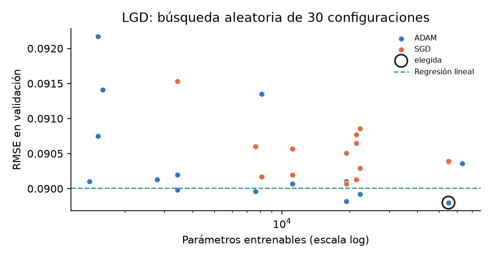
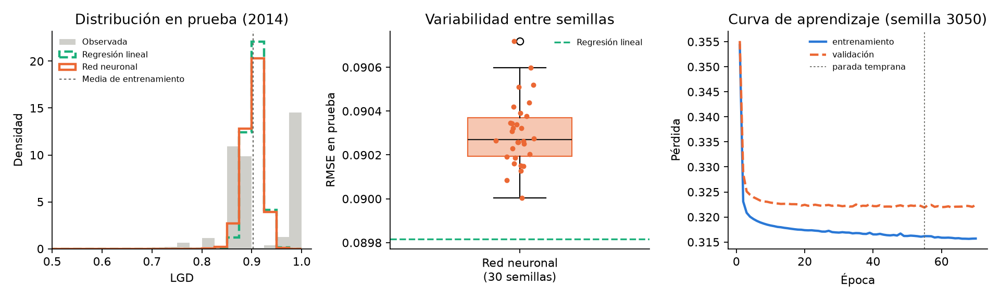
Combinamos los modelos con \(E[L] = PD\cdot
LGD\cdot EAD\) (Basel Committee on Banking Supervision, 2006).
Como EAD usamos el monto pedido
(loan_amnt): es lo único que se conoce con seguridad el día
de la solicitud y es un límite superior, porque en el peor caso la
persona no paga ninguna cuota. En el entrenamiento de la LGD, al castigo
quedaba expuesto en promedio el 74,8 % de lo desembolsado, así que
dejamos como opción una EAD “ajustada” igual al monto por 0,748.
Aplicamos los modelos a los 30 835 créditos de prueba de la PD (2015) y comparamos con una pérdida observada aproximada: para los malos, el capital no pagado menos lo recuperado neto; para los buenos, cero (Tabla 11 y Figura 13).
Tabla 11. Pérdida esperada en los créditos de prueba (2015), como porcentaje del monto prestado.
| Combinación | PD media | LGD media | Pérdida / monto |
|---|---|---|---|
| Red (PD) × Red (LGD) | 0,259 | 0,907 | 25,2 % |
| Logística (PD) × Lineal (LGD) | 0,240 | 0,909 | 23,3 % |
| Observada (aproximada) | 0,255 | — | 24,4 % |
Fuente: elaboración propia con datos de Lending Club (Kaggle).
A nivel de portafolio las dos combinaciones quedan cerca de lo observado, y por deciles la curva esperada sigue de cerca a la observada, del 5 % en el decil más bajo a cerca del 50 % en el más alto. Casi todo ese orden lo aporta la PD, porque la LGD es casi constante. Con la EAD ajustada la pérdida esperada baja a 18,9 % y queda por debajo de lo observado: los créditos que ya terminaron en 2015 son los que incumplieron muy rápido y casi no alcanzaron a pagar capital. Además, la pérdida observada de 2015 está sobreestimada, porque esos créditos casi no han tenido tiempo de recuperar (Figura 10).
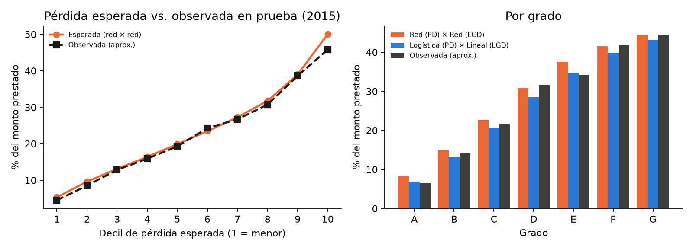
Tabla 12. Qué aportó la red neuronal en cada tarea.
| PD | LGD | |
|---|---|---|
| Métricas en prueba | Mejor: AUC 0,707 frente a 0,700; KS 0,304 frente a 0,293 | Igual o peor: RMSE 0,0903 frente a 0,0898 |
| Variabilidad entre semillas | Pequeña (desv. 0,0016 en AUC), menor que la ganancia | Muy pequeña (desv. 0,0001 en RMSE) |
| Costo | 640 veces más parámetros; ~130 veces más tiempo | 640 veces más parámetros; miles de veces más tiempo |
| Interpretabilidad | Necesita gradientes integrados para dar puntos; la logística los da directo | Igual; no se justifica el esfuerzo |
| ¿Vale la pena? | Ganancia real pero pequeña; depende de si se traduce en dinero | No |
Fuente: elaboración propia a partir de las Tablas 5, 6, 8 y 10.
En la PD la red encontró algo que la logística no ve: es mejor en todas las semillas y castiga las moras pasadas como se esperaría, cosa que la logística no hacía (Tabla 7, H7). Pero la diferencia es menos de un punto de AUC. En la LGD no aportó nada, porque el problema no está en el modelo sino en la información: con datos de la solicitud no se puede saber cuánto se va a recuperar.
Lo que aprendimos del problema:
mths_since_last_delinq el faltante significa “nunca ha
estado en mora”.La aplicación ¿Me prestas? (enlace) usa la red neuronal de la PD. La persona ingresa sus datos (monto, plazo, propósito, grado, ingreso, vivienda, DTI, uso del cupo, consultas, moras y años de historia crediticia) y obtiene:
Se levanta localmente con streamlit run app/app.py.
Todo está en el repositorio
con versiones fijas en requirements.txt, semillas fijas en
config/, los datos procesados en
data/processed/ y los modelos entrenados en
models/. Cada experimento se lanza con un comando y sus
parámetros se cambian con --set clave=valor:
python src/preparar_datos.py # datos procesados desde loan.csv
python src/descriptivo.py # Figuras 1 a 4
python src/pd_logistica.py # regresión logística y scorecard (Figura 5)
python src/pd_red.py --demo # red de la PD, demostración en menos de 2 minutos
python src/pd_red.py # experimento completo (~20 min)
python src/interpretabilidad.py # Figuras 8 y 9
python src/lgd_objetivo.py # variable objetivo de la LGD (Figura 10)
python src/lgd_modelos.py --demo # LGD, demostración
python src/lgd_modelos.py # experimento completo (~6 min)
python src/perdida_esperada.py # Figura 13
streamlit run app/app.py # aplicaciónUsamos Claude (Anthropic) durante todo el trabajo. El registro
completo está en docs/uso_ia.md. Los prompts principales
fueron estos (literales, con […] donde se recortó):
Tabla 13. Prompts principales y su resultado.
| Etapa | Prompt | Qué produjo |
|---|---|---|
| Inicio | “ahora vamos con el segundo trabajo de la materia […] vamos a ir paso por paso pero dandome los archivos para hacer un seguimiento en git hub […]” | Explicación del enunciado, estructura del repositorio y plan por pasos |
| Parte 1 completa | “ha eso me refiero la idea es que el haga la parte dos pero yo ayudarle en el proceso, terminemos por completo la parte 1” | Red neuronal de la PD, búsqueda, 30 semillas, interpretabilidad y su documentación |
| Parte 2 | “sigamos con la parte dos, dame los archivos del punto dos para pasarselos a lenny” | Variable objetivo de la LGD, modelos, pérdida esperada y su documentación |
| Reporte | “si por favor” (respuesta a la oferta de armar el blog) | Este reporte, a partir de los documentos de docs/ |
Fuente: elaboración propia.
Impacto en el resultado. La IA escribió la mayor parte del código y de los textos, y propuso varias decisiones de modelamiento (el corte de 2012, el indicador de “nunca”, la cuasi-verosimilitud para la LGD). Eso nos permitió llegar a un trabajo más completo de lo que habríamos hecho solos en el mismo tiempo. Pero también cometió errores que sonaban correctos (sección 13), y varios solo aparecieron al correr el código o al comparar los textos con los archivos de resultados. Lo que aprendimos es que todo número de un texto tiene que poder rastrearse a un archivo generado por el código, y que cada script hay que probarlo en un proceso nuevo, no solo en el que lo creó.
Documentamos seis errores reales de la IA durante el desarrollo, en cuatro categorías. Algunos los detectó la misma IA al volver a correr o revisar su trabajo; lo indicamos en cada caso. Para que la evidencia sea verificable, cada hallazgo apunta a un archivo o a un comando del repositorio.
Hallazgo 1. Código: una función que no se puede guardar.
FunctionTransformer con una función lambda
para el indicador de faltantes.joblib el programa falló.pickle, que usa
joblib, solo guarda funciones definidas con nombre en un
módulo; una lambda no se puede serializar y lanza un
error.src/comun.py (es_faltante,
nombres_nunca).Hallazgo 2. Código: un modelo que solo se podía cargar desde el script que lo creó.
LinealRecortado, que
envuelve la regresión lineal de la LGD, estaba definida dentro de
src/lgd_modelos.py, el script que se ejecuta.src/perdida_esperada.py, que carga ese modelo.AttributeError: Can't get attribute 'LinealRecortado' on <module '__main__'>.
Pickle guarda la clase como __main__.LinealRecortado, que
no existe cuando el programa principal es otro.src/comun.py y
reentrenar.Hallazgo 3. Código desactualizado: un parámetro obsoleto de Streamlit.
use_container_width=True.width="stretch".width="stretch" en
app/app.py.requirements.txt.Hallazgo 4. Matemáticas: puntos base de la scorecard desactualizados.
reports/tablas/metricas_pd_logistica.json da
"puntos_base": 550.22.docs/04_modelo_referencia.md y en la sección 6.7.Hallazgo 5. Datos: una proporción atribuida al conjunto equivocado.
reports/resumen_lgd.txt, que dice
0,811 para toda la base.docs/06_lgd.md y la sección 8.4
dicen 74,8 % en entrenamiento y 81,1 % en toda la base.Hallazgo 6. Conceptos: el costo de cómputo de la red mal dimensionado.
costo_lgd.csv y en la salida de
src/pd_red.py.Verificaciones sin error encontrado. Comprobamos que
existen todas las referencias de la sección 14. También comparamos las
columnas de loan.csv contra el diccionario: el diccionario
llama is_inc_v a lo que en el archivo es
verification_status, y describe
fico_range_low/high, que no vienen en el archivo.
Basel Committee on Banking Supervision. (2006). International convergence of capital measurement and capital standards: A revised framework (Comprehensive version). Bank for International Settlements. https://www.bis.org/publ/bcbs128.htm
Bergstra, J., & Bengio, Y. (2012). Random search for hyper-parameter optimization. Journal of Machine Learning Research, 13, 281–305.
Breiman, L. (2001). Random forests. Machine Learning, 45(1), 5–32. https://doi.org/10.1023/A:1010933404324
Ferrari, S. L. P., & Cribari-Neto, F. (2004). Beta regression for modelling rates and proportions. Journal of Applied Statistics, 31(7), 799–815. https://doi.org/10.1080/0266476042000214501
Kingma, D. P., & Ba, J. (2015). Adam: A method for stochastic optimization. En 3rd International Conference on Learning Representations (ICLR). https://arxiv.org/abs/1412.6980
Papke, L. E., & Wooldridge, J. M. (1996). Econometric methods for fractional response variables with an application to 401(k) plan participation rates. Journal of Applied Econometrics, 11(6), 619–632.
Ranadeep. (s. f.). Credit risk analysis [Conjunto de datos]. Kaggle. Recuperado el 26 de octubre de 2026 de https://www.kaggle.com/datasets/ranadeep/credit-risk-dataset
Rumelhart, D. E., Hinton, G. E., & Williams, R. J. (1986). Learning representations by back-propagating errors. Nature, 323(6088), 533–536. https://doi.org/10.1038/323533a0
Siddiqi, N. (2006). Credit risk scorecards: Developing and implementing intelligent credit scoring. John Wiley & Sons.
Srivastava, N., Hinton, G., Krizhevsky, A., Sutskever, I., & Salakhutdinov, R. (2014). Dropout: A simple way to prevent neural networks from overfitting. Journal of Machine Learning Research, 15(56), 1929–1958.
Sundararajan, M., Taly, A., & Yan, Q. (2017). Axiomatic attribution for deep networks. En Proceedings of the 34th International Conference on Machine Learning (Vol. 70, pp. 3319–3328). PMLR.